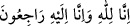

adam yüzünü açtığında bir de baktım ki kadının beş parmağının izi, adamın suratında
duruyor. Ona dedim ki: “Sonra, ne oldu?”
Adam şu cevabı verdi: “Sonra kadına kefenini iade ettim. Toprağını da üzerine
yaydım. Ve artık yaşadığım sürece mezar soymayacağıma dair kendi kendime söz
verdim.
Ebu İshak der ki: “Bunun üzerine ben, adamın başından geçenleri Evzâî’ye yazdım.
Evzâî bana yazdığı cevabî mektubunda şöyle diyordu: “Vah sana, ona sor bakalım ehl-i
sünnetten ölenlerin ne kadarının yüzü kıbleye dönük olarak kalmış?”
Adama bunu sordum. “Çoğunun yönü kıbleden başka bir yöne çevrilmiş.” dedi. Ben
de bu cevabı Evzâî’ye bildirdim. O da bana gönderdiği cevabî mektubunda üç defa “
”“Biz Allah içiniz ve O’na döneceğiz.” (Bakara 2/156) diyor ve
şöyle devam ediyordu: “Yüzü kıbleden başka bir yöne çevrilmiş olanlar, sünnetin
dışında ölenlerdir.” O, “sünnet” ile, “İslâm milleti” ni kastediyordu.
Rahmeti sonsuz olan Allah’dan affını, mağfiretini ve bizden razı olmasını dileriz.
Hâfız şöyle der:
Rabbim! Hidâyet bulutundan bir yağmur gönder
Toz gibi ortadan kalkmadan önce
Âyet-i kerîmelerde şu husûslara işaret olunmuştur: Hak yolunu sıdk ile taleb edenin,
büyük velîlerin hallerinden münâsebetsizce konuşan, onların şekline bürünüp
hırkalarını giymekten başka nasîbi olmayan kimselerle düşüp kalkması uygun olmaz.
Çünkü mizac, mizacdan çalar ve etkilenir.
Kişi kendi cinsinden olanın huyunu alır
Habis olanla karşılaşmaktan sakın
Rüzgar kötü bir alandan geçince
Pis havadan kötü kokular alır
Şu halde mutlaka hayırlı kişilerle oturup kalkmak, sohbet etmek ve büyüklerin
sözlerinden öğüt almak gerekir.
Abdullah b. Ahnef’in şöyle dediği rivayet edilir: Remle’de bulunan Rûzbârî (k.s.)’u
ziyaret etmek üzere Mısır’dan yola çıktım. Yolda, Îsâ b. Yûnus el-Mısrî ile karşılaştım.
“Sana rehberlik edeyim mi?” dedi.
“Evet, buyur” dedim.
Dedi ki: “Sûr kentine git. Orada murâkabe halinde bulunan bir şeyh ile bir genci
göreceksin. Onlara bir kere bakman, ömrünün kalan kısmında sana yeter.”